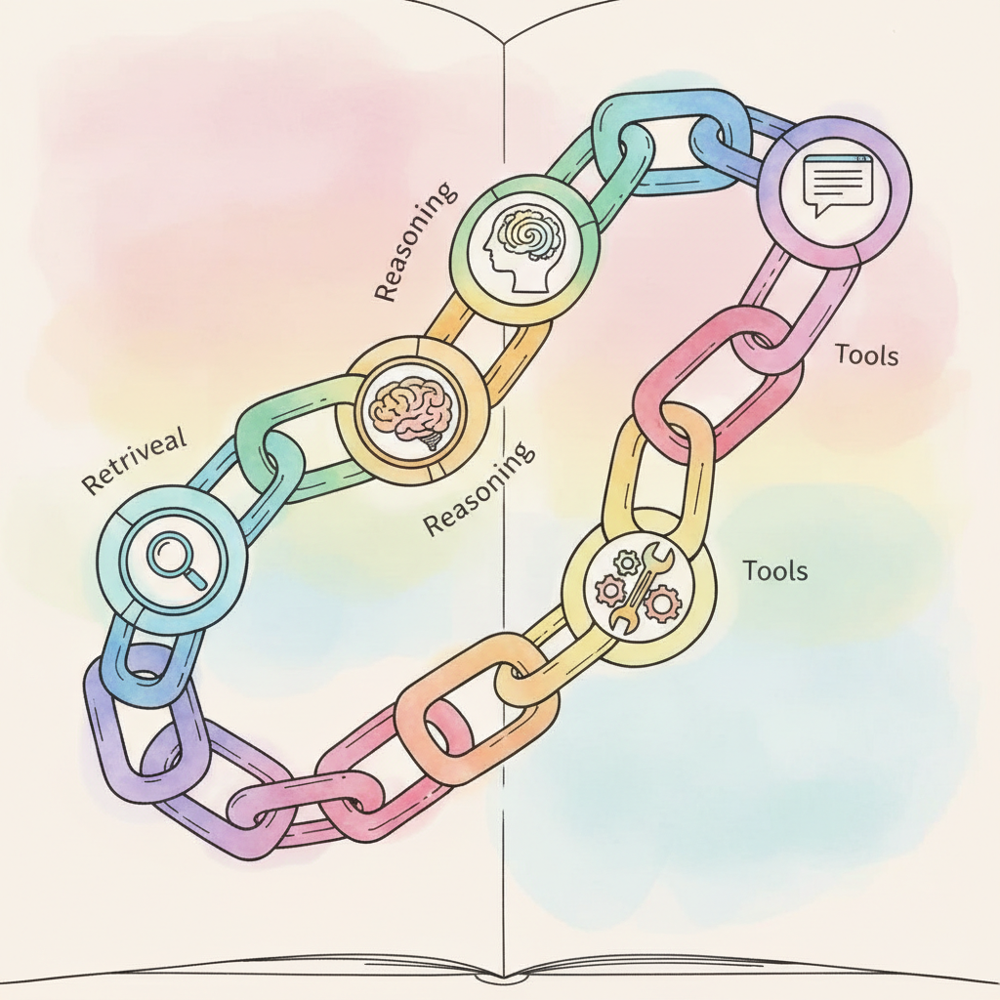

LangChain: Chains, Agents, and Retrieval is the most widely adopted orchestration framework for LLM applications. It provides composable abstractions for prompt management, chain construction, memory handling, document loading, retrieval, output parsing, and agent tooling. The core philosophy is to make it straightforward to connect an LLM to external data and actions through a standardized interface.
The framework has evolved significantly since its initial release. LangChain: Chains, Agents, and Retrieval v0.3+ introduced LangChain: Chains, Agents, and Retrieval Expression Language (LCEL) for declarative chain composition, a cleaner separation between langchain-core, langchain-community, and provider-specific packages (such as langchain-openai and langchain-anthropic). These changes make it easier to build streaming, async-compatible pipelines while keeping dependencies minimal.
This appendix is aimed at application developers who want to build LLM-powered products quickly. LangChain: Chains, Agents, and Retrieval excels at gluing together API calls, retrieval pipelines, and structured output parsing without writing boilerplate. If you need fine-grained control over model internals or training workflows, look to Appendix K (HuggingFace) instead.
The concepts here connect to Chapter 10 (LLM APIs), which covers the provider interfaces that LangChain: Chains, Agents, and Retrieval wraps, and Chapter 11 (Prompt Engineering), which explains the prompt design principles behind LangChain: Chains, Agents, and Retrieval's template system. For RAG pipelines built with LangChain: Chains, Agents, and Retrieval retrievers, see Chapter 20 (RAG). For agent patterns, see Chapter 22 and Appendix M (LangGraph) for stateful agent graphs.
You should be comfortable with Chapter 10 (LLM APIs) so you understand how API calls, tokenization limits, and streaming work at the provider level. Chapter 11 (Prompt Engineering) provides the prompt design knowledge that makes LangChain: Chains, Agents, and Retrieval's template and parser abstractions intuitive. Basic Python and familiarity with pip package installation are assumed.
Use LangChain: Chains, Agents, and Retrieval when you need to rapidly prototype an LLM application that combines prompt templates, structured output parsing, document retrieval, or memory. It is a strong choice for RAG chatbots, document Q&A, data extraction pipelines, and any workflow that chains multiple LLM calls together. If your use case requires complex stateful agent workflows with branching logic, consider Appendix M (LangGraph), which extends LangChain: Chains, Agents, and Retrieval with graph-based state management. For a retrieval-first approach with deep indexing features, see Appendix O (LlamaIndex).